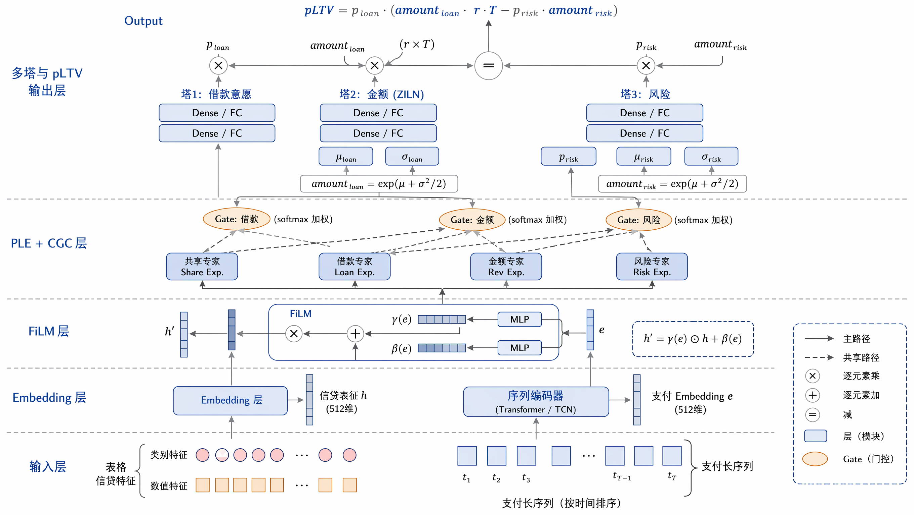
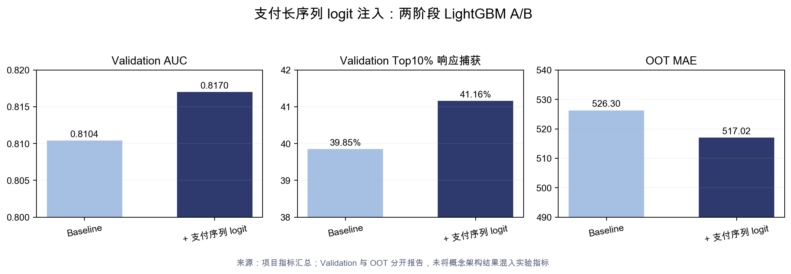

05 · 参与 / 实验探索 · 2025–2026
信贷用户生命周期价值 pLTV：PZ-Net 与支付长序列表征探索
项目区分两条归属不同的主线：PZ-Net 是团队方法；个人完成支付长序列 logit / score 注入两阶段 LightGBM、业务分位评估与 OOT 漂移诊断。
- Validation AUC
- 0.8104 → 0.8170
- Top10% 响应捕获
- 39.85% → 41.16%
- OOT MAE
- 526.30 → 517.02
Situation｜信贷价值预测不能只看响应概率
电商或游戏中，高频购买通常对应高价值；信贷价值来自利息收入减坏账损失，需要同时估计借款意愿、借款金额、违约概率和违约损失：
$$ \mathrm{pLTV} :=P_{\mathrm{loan}}\cdot \left( \mathbb{E}[V_{\mathrm{balance}}\mid \mathrm{loan}]\cdot r\cdot T -P(\mathrm{od}\mid \mathrm{loan})\cdot \mathbb{E}[V_{\mathrm{balance}}\mid \mathrm{od}] \right). $$
响应目标希望找到更愿意借的人，风控目标则要排除危险用户，两者可能产生负迁移。金额同时具有大量零值和极端长尾，普通 MSE 难以稳定拟合。
宽表主要记录截面统计，难以表达交易节奏、商户迁移和场景序列。支付侧长序列模型已经将变长行为压缩为高维 hidden state；其 logit 是末层线性投影得到的一维任务摘要。
Task｜验证支付长序列信号能否补充信贷 pLTV 排序
项目分为两条归属不同的主线：PZ-Net 是团队方法，我负责学习、复现理解和方法迁移；个人实际完成的是支付长序列 logit / score 注入两阶段 LightGBM、业务分位评估与 OOT 漂移诊断。
具体任务是：在“贷前、未开通、历史有开通”客群上，先用轻量特征注入验证跨域序列行为是否有效，再明确它的收益边界和下一步是否值得做完整 embedding / FiLM 端到端方案。
Action｜用团队 PZ-Net 思路指导，两阶段 LightGBM 先验证增量
方法理解层。 团队 PZ-Net 方法用 PLE / CGC 区分共享专家和任务独占专家。每个任务的 Gate 只混合共享专家与本任务专家，从结构上减少强风控梯度对响应塔的污染。金额塔使用 ZILN 预测对数正态参数 $\mu$ 和 $\sigma$，以处理零膨胀和正值长尾；Sigma Penalty 约束 $\sigma^2$，避免模型通过放大方差降低 NLL。

个人实验层。 我实际跑通的是两阶段流程：Stage 1 估计 $P(\mathrm{loan})$；Stage 2 在有值样本上用 Tweedie / L2 回归 $\mathbb{E}[\mathrm{amount}\mid\mathrm{loan}]$；两者相乘得到期望价值。流程包含负采样概率校准、HPO、Top10% / 20% 分位报告和 OOT 漂移诊断，并旁路比较 ZILN 三头。
信号注入层。 支付长序列 score 先与宽表拼接，再分别训练响应分类和有值回归。验证集与 OOT 分开报告，避免用验证集增益掩盖时间外推问题。另一条探索把宽表文本化后编码为 896 维 KaLM Embedding，观察到分类增益较弱、金额回归更受益。

Result｜序列信号有增量，但受时间漂移和金额长尾约束
个人实验显示，Validation AUC 从 0.8104 提升到 0.8170，Top10% 累计响应占比从 39.85% 提升到 41.16%，OOT MAE 从 526.30 降至 517.02。验证集更高档方案的 AUC 位于约 0.8149–0.8170，KS、MAE 和 RMSE 同步改善；全量日均在贷相对误差可到约 −0.38% 量级。
结果证明跨域序列行为信号可以补充截面宽表，但收益取决于预训练任务与信贷目标是否对齐。OOT 上模型层仍有小幅增益，但业务分布变化带来极端金额低估：客群支用率更高，并出现验证集没有的 9k 以上大额长尾；风险向表征使 Top10% 存在明显低估。
KaLM 组合相对基线的叙事数字为全量误差下降 31.8%、支用误差下降 28.3%，但当前源目录缺少对应工作簿或图表，因此只作为待补证据项保留。
Review｜署名边界与下一步
- PZ-Net 是团队 KM 方法，个人定位为学习、复现理解和方法迁移，不暗示独立提出。
- 个人完成的是长序列 logit / score 注入。完整 penultimate embedding 拼接与 FiLM 端到端训练仍是后续方案。
- 概念架构图与实际 A/B 结果分开归因，不能把前者当作已完成训练的证据。
- “误差下降 31.8% / 28.3%”目前缺少对应图表，保留为待补证据，不与已展示的 logit A/B 混合。
- 下一步可截取分类头前的多维 embedding，以 FiLM 或任务门控做更细适配，并在 OOT 上增加漂移校准和极端金额稳健损失。
- 待补材料包括 KaLM 消融、logit 漂移、分层金额曲线、SHAP 和稳定性报告。